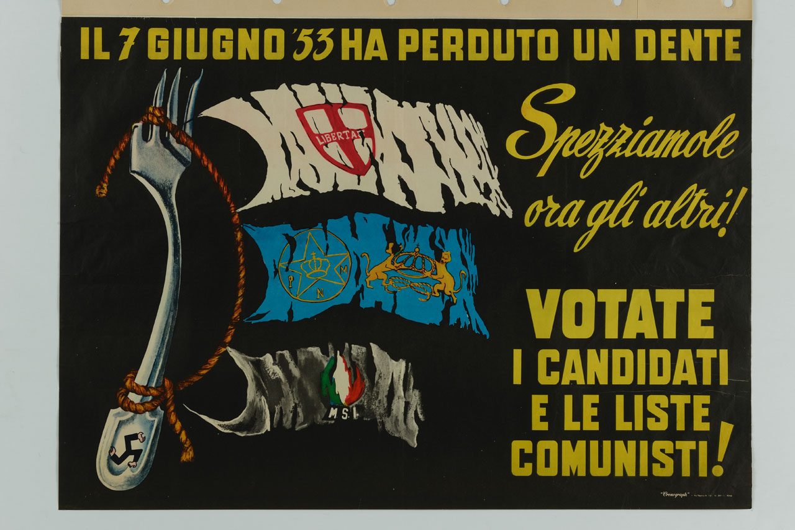
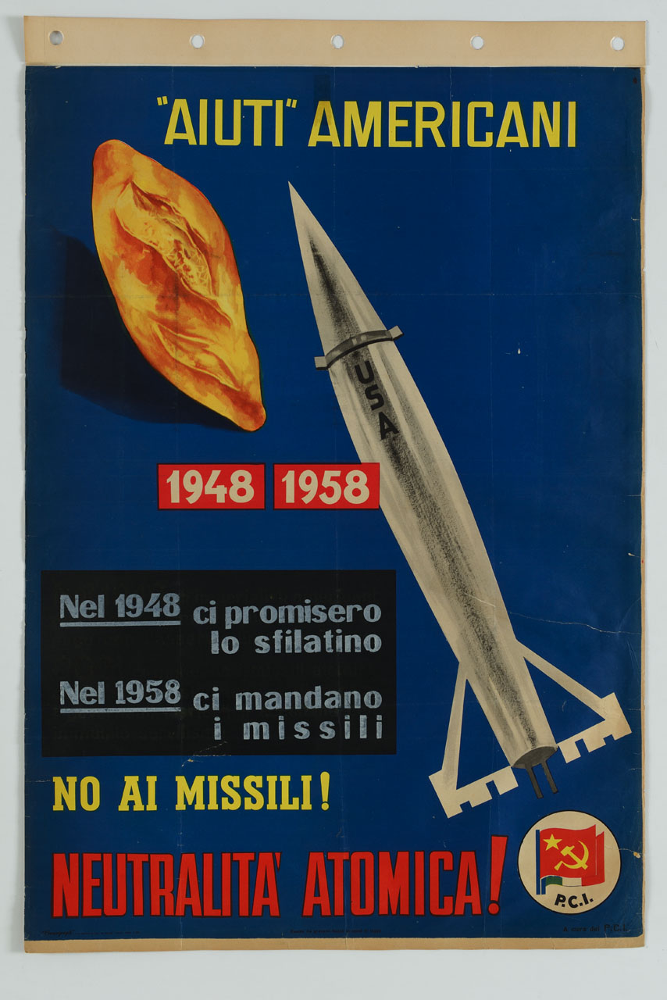
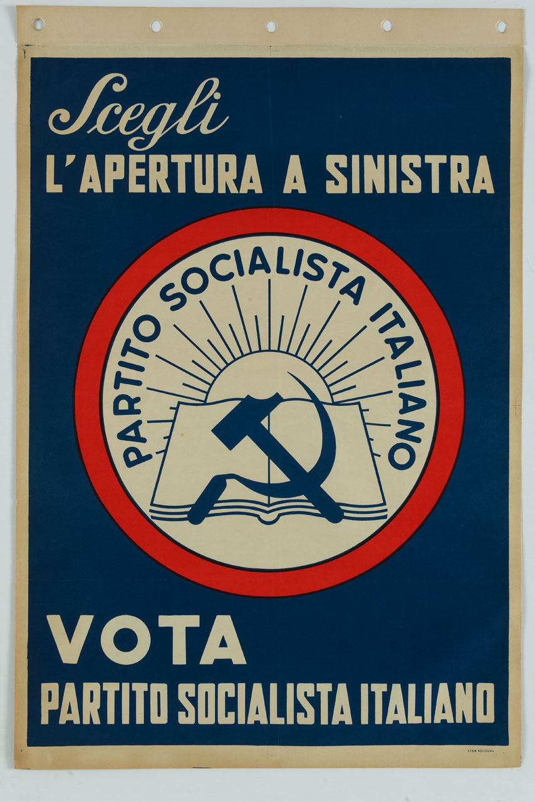
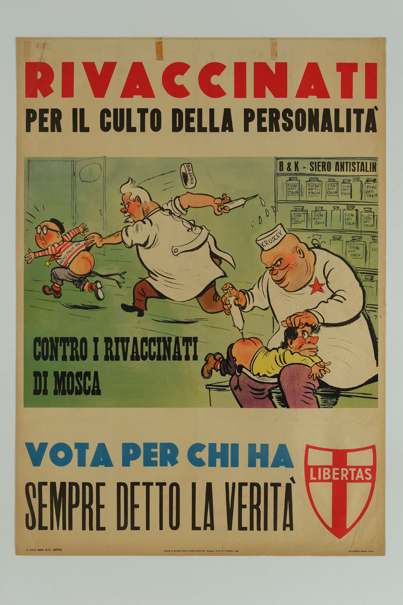
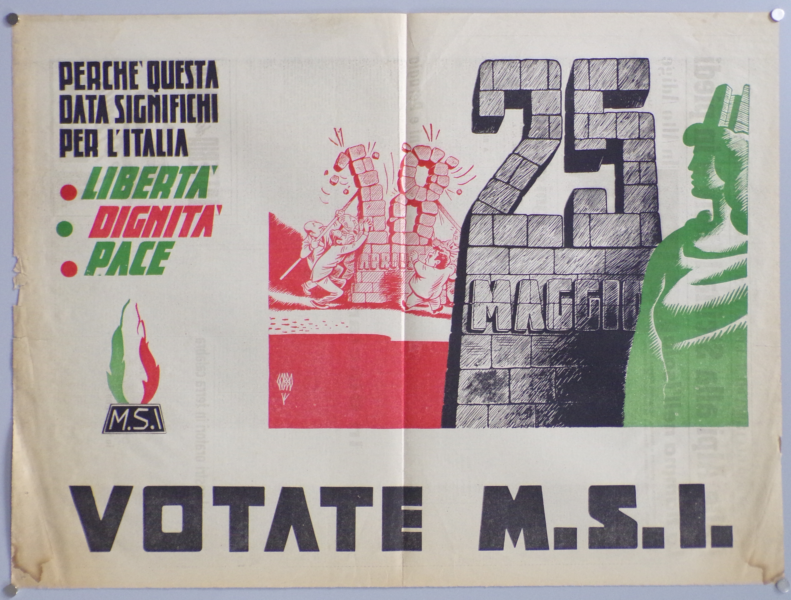

Creatore: Partito Comunista ItalianoVIAF.
Data: 1958.
Istituzione fornitrice: Museo nazionale Collezione Salce, TrevisoVIAF.


Creatore: Partito Socialista ItalianoVIAF.
Data: 1955.

Creatore: Democrazia CristianaVIAF.

Creatore: Cesare Gobbodati.cultura.gov.it.
Creatore: L'Europeo CiacArchivio Luce.
Istituzione fornitrice: Cinecittà - LuceWikidata.